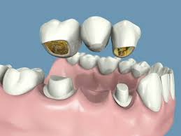
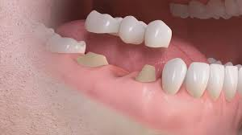
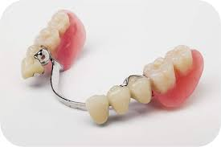
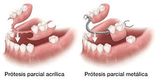

Prótesis Fijas y Removibles
Recupera tu sonrisa completa y vuelve a comer sin problemas a una fracción del costo real.

Si has perdido uno o varios dientes, las Prótesis (Fijas o Removibles) son la solución perfecta para llenar esos espacios vacíos.
Al atenderte con nosotros, nuestra mano de obra especializada es totalmente gratuita; tú solo cubres el costo de los materiales del laboratorio.
Personas o razones por las que no se puede seguir un tratamiento¿Qué son exactamente y qué opciones tengo?
Son "dientes de reemplazo" fabricados a la medida en un laboratorio. Existen de dos tipos principales:

Prótesis Fija (Puentes)
Se cementan (pegan) apoyándose en los dientes sanos que están al lado del espacio vacío. No se quitan, se sienten y se cepillan como si fueran tus dientes naturales.

Prótesis Removible (Placas)
Aparatos que tú mismo te pones y te quitas para lavarlos. Se apoyan en tu encía y se sujetan a tus dientes con pequeños ganchos (de metal, acrílico o estéticos/flexibles).
¿Por qué se llegan a ocupar?
Están diseñadas para cualquier persona que haya perdido dientes por:
- Extracciones por caries muy avanzadas no atendidas.
- Enfermedades de las encías que aflojaron los dientes.
- Fracturas o golpes fuertes en accidentes.
¿Qué ganas con este tratamiento?
Tener espacios vacíos es peligroso. Al ponerte una prótesis:
- Vuelves a masticar bien: Comes sin lastimarte y mejoras tu digestión.
- Evitas dientes chuecos: Los dientes vecinos buscan ocupar el hueco vacío y se enchuecan; la prótesis frena esto.
- Recuperas tu seguridad: Vuelves a sonreír y hablar con claridad sin taparte la boca.
Comparativa de Inversión
Con PractiDent te ahorras más del 50%. El precio exacto depende del material y los dientes a reponer, pero aquí tienes un estimado claro. El pago exacto se acuerda en persona.
| Tratamiento & Material | Costo Privado (MXN) | Tu Cooperación (MXN)* | Ahorro |
|---|---|---|---|
| Puente Fijo 3 uds. Metal-Porcelana | $12,000 – $18,000 | $4,000 – $7,000 | ~ 60% |
| Puente Fijo 3 uds. Libre de Metal / Zirconia | $18,000 – $40,000 | $6,000 – $10,000 | ~ 70% |
| Removible Básica Placa de Acrílico | $4,500 – $7,500 | $1,800 – $3,800 | ~ 60% |
| Removible Estética Material Flexible / Sin metal | $6,000 – $12,000 | $3,000 – $5,000 | ~ 55% |
| Removible Alta Resistencia Estructura Metálica | $8,000 – $12,000 | $2,000 – $4,000 | ~ 70% |
El dinero de tu cooperación va EXCLUSIVAMENTE al pago del laboratorio dental que fabrica tu prótesis. La mano de obra del alumno y la supervisión del especialista son totalmente gratuitas.
¿Por qué hay tanta diferencia?
En consultorios privados, pagas honorarios del especialista, renta de la clínica y el laboratorio. Aquí, ese sobreprecio desaparece. Solo cubres los gastos estrictos de fabricación externa.
100% Personalizado
Cada boca es un mundo. Hay muchos materiales diferentes. En tu valoración platicaremos frente a frente para encontrar la mejor opción médica y llegar a un acuerdo económico cómodo para ti.

Nuestros 4 Pasos Seguros
Valoración
Revisamos tu boca, el profesor aprueba el diseño y acordamos el costo del material.
Preparación
Preparamos tus dientes y tomamos medidas exactas de tu boca.
Pruebas
Citas para probar que el esqueleto encaje perfectamente antes de terminarla.
Entrega Final
Te entregamos tu prótesis, ajustamos la mordida y te enseñamos a cuidarla.
¿Listo para volver a sonreír con confianza?
Escríbenos para agendar tu cita de valoración en nuestros horarios clínicos y da el primer paso hacia una mejor digestión y autoestima.
Agendar mi ValoraciónAtención exclusiva en horarios de práctica supervisada.